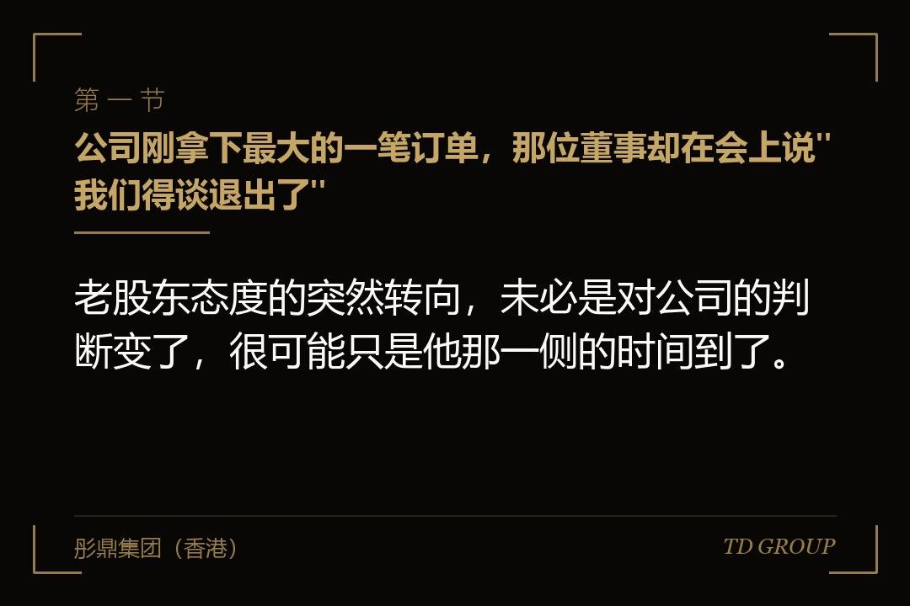
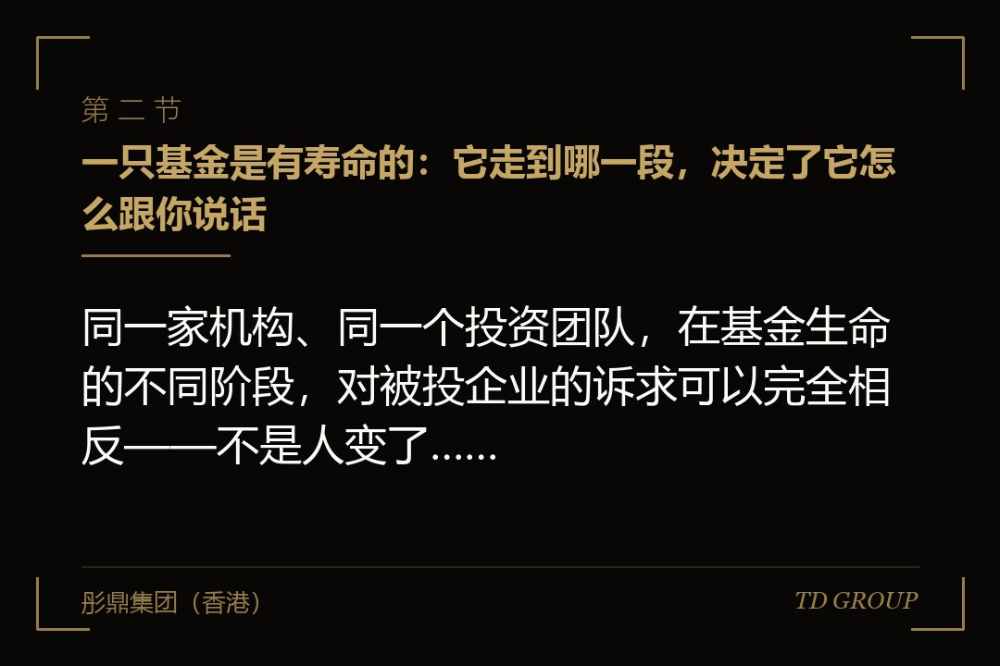
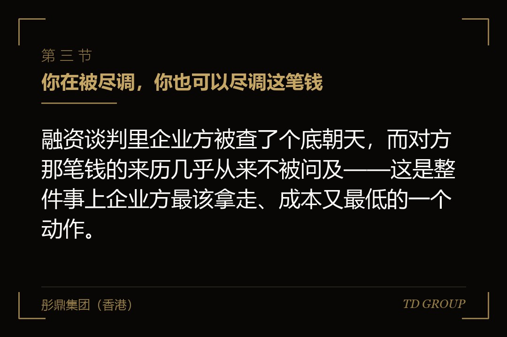

一、公司刚拿下最大的一笔订单，那位董事却在会上说"我们得谈退出了"

结论先行：老股东态度的突然转向，未必是对公司的判断变了，很可能只是他那一侧的时间到了。一家做功能性薄膜的企业遇到的就是这种情形。那一年它刚通过一家头部客户的供应商体系认证，拿下成立以来单笔金额最大的框架订单，产能排到了次年。就在那次董事会上，进入公司已经五年的那位机构董事提出了一件与议程无关的事：希望公司在半年内给出可执行的退出方案，给不出，他要按投资协议启动回购条款。
创始人那几天想的全是"哪里做错了"——是不是上一季度毛利掉了两个点，是不是新产线的计划显得激进。这些猜测没有一条是对的。
答案是两个月后一次饭局上，由对方团队的一位前员工随口说出来的：那只基金是很多年前设立的，退出期早就过了，眼下处在延长期的最后一个年度，基金文件里的延长次数已经用完，管理人必须在那个日子之前把能变现的项目全部处置掉，然后进入清算，把资金分回给自己的出资人。这家薄膜企业是那只基金账上剩下的、账面价值最高也最难卖的项目。那位董事在董事会上说的每一句话，动机都不在这家公司身上。
创始人后来的复盘更值得记住：这张倒计时表在他签字那天就已经开始走了，而他从头到尾没有问过一句。当时估值、稀释比例、董事席位、否决事项、回购触发条件逐字过了三轮，可没有任何一个环节会主动告诉他"这笔钱来自一只成立于某年的基金，它还剩几年寿命"。这不是对方隐瞒，是企业方通常压根不知道该问。
有个前提要先说清楚：基金按期退出、把资金返还给自己的出资人，是它对出资人的正当义务，不是什么恶意行为。管理人在延长期里催得急，跟他认不认可你的公司是两回事——他很可能一边在董事会上逼你给退出方案，一边在别的场合真心推荐你的产品。把它理解成一张可以提前读到、也可以提前安排的时间表，处置方式就完全不同。
有几件相邻的事此处只作一句交代：拖售权（也称领售权）条款本身怎么写、启动门槛与价格保护怎么设，是讲该条款机制时另有展开的话题；优先购买权与共同出售权在老股转让里怎么运作，同样另有专门的讨论；回购触发之后利息怎么算、责任怎么分担，以及降价轮怎么谈，都是另外的话题，此处不展开。
二、一只基金是有寿命的：它走到哪一段，决定了它怎么跟你说话

结论先行：同一家机构、同一个投资团队，在基金生命的不同阶段，对被投企业的诉求可以完全相反——不是人变了，是他手上那只基金的任务变了。
投资期的特征很好认：管理人愿意谈长期、愿意陪你熬研发周期、愿意追加投资，甚至主动帮你介绍下一轮的投资人，因为它自己也需要这个项目在下一轮被重新定价。到了退出期，它原则上不再新投，核心任务变成处置已投项目、把资金收回来分配。同样一次董事会，投资期里它问你明年打算在研发上投多少，退出期里它问你明年能分多少红、有没有同行来接触过——背后是同一个人、同一家机构，但驱动它的东西已经换了。
再往后是延长期。退出期届满仍有项目没处置完时，管理人可以按基金文件的约定申请延长，而这通常不是他一句话的事，多数基金文件要求经过出资人会议或者咨询委员会的同意程序，且对次数与时长都设了上限。每一次延长都在消耗管理人在出资人那里的信用，所以延长期里的管理人通常是整个存续期中态度最硬、给的时间最短、也最不容易被说服"再等一等"的那个状态；到了延长次数用完的那一年，它手上已经没有可以让步的余地。
每一段具体多长因基金类型、出资人结构与基金文件约定而异，市场上并没有可以套用的标准数字，本文也不写平均值——企业方需要的不是行业平均，是投你那一只基金的实际约定。
同一家机构的不同期基金态度可以差得非常远，这一点最容易被忽略。一家做工业气体的企业股东名册上有两个名字很接近的主体，都属于同一家机构，只是分属不同年份设立的两只基金。企业方一直把它们当成"同一个股东"，沟通也只跟同一位投资经理。
结果在同一个季度里，创始人先收到老的那只提出的退出诉求，紧接着新的那只主动询问要不要追加投资。创始人当时的原话是"这家机构到底是想走还是想留"。答案是两个都真：老的那只处在延长期，必须走；新的那只还在投资期，愿意留。
处置方式因此完全不同于"跟一个股东谈判"。企业方后来把股东名册按资金来源的基金重新梳理，同一机构下的不同主体分开列，各自标注设立年份与已知的退出期安排，再按急不急分成两组分别沟通。解法正是从这里出来的——新的那只基金承接了老的那只手上的一部分股权，剩下的由新引入的一位投资人接手，全程没有动用公司一分钱。
三、你在被尽调，你也可以尽调这笔钱

结论先行：融资谈判里企业方被查了个底朝天，而对方那笔钱的来历几乎从来不被问及——这是整件事上企业方最该拿走、成本又最低的一个动作。
尽职调查是单向的：对方查你的股权沿革、查账、查诉讼、查社保与完税、查关联往来，企业方配合几个月交出几百页材料；反过来，企业方对这笔钱的了解通常只有三件事——机构叫什么、投多少、什么估值。其实这笔钱的时间表是可以问的，也一般都问得到，这类信息在专业投资人之间是常识性的。关键不是问不问得到，是问完之后有没有落到纸面上。
值得问清楚并写进投资备忘的，大致是这么几组。
其一是主体与来源：这笔钱具体从哪一只基金出、投资主体的全称是什么。这一组决定了后面所有问题问的是谁——很多企业方连自己股东名册上那个主体属于哪一只基金都说不清。
其二是设立年份与阶段：那只基金哪一年完成设立、目前处在投资期还是退出期、退出期预计什么时候届满。这一组权重最高，它直接决定这位股东会陪你走多久。
其三是延长安排：基金文件里有没有延长期的约定、延长要经过什么程序、可以延长几次。有延长空间的和没有的，谈判难度是两个量级。
其四是投出进度：这只基金已经投出去多少、这一笔是不是它接近尾声的几笔投资之一。如果是最后几笔，意味着它日后很难在你的下一轮里追加，进入退出期的时点也离你不远。
其五是同一机构下的其他主体：这家机构在你的股东名册上还有没有别的主体、分别来自哪一只基金。用处在工业气体那个例子里已经很清楚。
其六是过往的处置方式：这只基金过去通常走哪条路——转给下一轮的新投资人、由产业方并购、还是以启动回购收场。行为习惯比条款更能预测对方会怎么做。
一家连锁烘焙企业把这套动作做在了条款清单阶段。创始人问清设立年份与退出期的大致安排后一算，发现对方的退出期届满时点比协议里约定的回购触发时点还早一年多——即便公司完全按计划发展，对方也会在触发时点之前就必须动手。
这个发现改变了谈判重点：企业方没有去争回购价格的算法，而是提出把触发条件与"对方基金到期"彻底脱钩，协议里明确约定，投资方基于自身基金存续安排产生的退出需求不构成回购触发事由，双方另以专条约定退出协助义务。
对方接受了，因为它要的本来就是可退出，不是让创始人掏钱。三年后那只基金进入延长期开始找承接方时，双方是坐在同一侧谈的。
四、压力是怎么一级一级传到你身上的
结论先行：退出压力不是某一天突然出现的，它是一条有台阶的路径，而企业方通常要到第三、四级台阶上才察觉，那时可谈的空间已经小了很多。
最靠前的一级往往是善意的：对方主动说"我帮你介绍几个可能感兴趣的投资人"。企业方通常把它理解成资源支持，这不算错，但漏掉了一层——要留意他介绍的这一轮是新增资金进公司，还是让新投资人来买老股；如果对话里反复出现"老股也可以转一些出来"，这一级台阶的性质就已经变了。
再往上一级是要求配合：出材料、配合承接方尽调、创始人陪同见面。看起来仍然温和，成本却已经在转移——管理层的时间被大量占用，财务要重新整理历史数据，而公司并不因此拿到一分钱。企业方在这一级最该做的是把配合义务写清楚边界：愿意配合，但约定好频次、材料范围与中介费用由谁承担。
再往上是价格。承接方谈了几轮谈不下来，对方开始接受更低的价格，甚至主动要求按低于上一轮的价格转让老股。这一级的伤害是隐性但真实的：老股的成交价会成为下一轮新投资人手上的参照，压住公司下一轮的定价空间。所以这一级出现时企业方不再是旁观者——可以约定老股转让的价格下限，或者约定低于某个价格的转让需经董事会程序。
再往上是回购条款，双方关系就从"一起找出路"变成"依据协议主张权利"；而回购的后果落到谁身上、公司账上有没有可分配的资金去承接、创始人个人是不是共同义务人，都是签协议那天就定下来的。最上面一级是拖售权：当条款允许对方在满足特定条件时要求全体股东按同样条件出售股权，它就可以推动把整家公司卖掉。这一级一旦启动，企业方失去的不只是股权，是对公司未来的全部决定权。
还有一条更早也更隐蔽的传导路径，甚至发生在上述五级台阶之前：投资方开始在董事会上反对一切需要花钱的长期投入。一家做农业机械的企业在这上面吃过亏。
那一年管理层提了两个议案，一个是新建智能化装配线，一个是把海外经销体系从代理制改成直营，共同点是都要先花钱、回报要在两三年后才出现。那位机构董事对两个议案都投了反对票，理由说得很技术：现金流压力、投资回报期过长、行业需求存在不确定性。这些理由单独看都成立，两个议案都被搁置了。
一年半以后创始人才把这件事和后来的退出诉求连起来看明白：那位董事反对的不是这两个项目，是"两三年后才出现的回报"本身，因为他那只基金不可能还有两三年。企业方能做的是换个角度看董事会的反对票：如果某位董事对所有回报期较长的议案都投反对，而对能立刻改善当期利润与现金的议案都投赞成，那么他反对的可能不是项目，是时间。
五、看得懂的早期信号
结论先行：这些信号单独看每一条都有别的解释，但它们同时出现的时候，指向的通常是同一件事——对方那边的时间到了。
一是对接人换了。原来跟你对接的是当年主导这笔投资的合伙人，某天换成一位你没见过的人，自我介绍时提到自己主要负责"投后管理"或者"资产处置"。主导投资的人关心项目成长，负责处置的人关心变现路径；如果新来的人在头一次会面里就开始问退出相关的问题，那就不只是人事变动。
二是报告频率变了。原来是季度报告，某天开始要求改成月度，口径也从经营指标转向现金与可分配利润。这常被理解成"管得更严了"，其实更可能是它需要更新的数据去做估值与处置准备。
三是索要历史全套材料：过去若干年的完整财务底稿、审计报告、章程与股东会决议的历史版本、权属文件。这套材料的用途只有一个，给承接方看。遇到这种要求可以直接问一句"是不是有人在看这个项目"，多数情况下对方会承认，早一步知道就多一段准备时间。
四是开始打听同行。对话里出现"你们这行有没有哪家上市公司在做并购""某某家跟你们业务挺互补的，接触过没有"。这也可能是好意，但如果同期伴随着上面几条，那么对方问的不是能不能帮你，是能不能有人来接手。
五是追问现金分红。分红能让股东部分回收资金、又不需要找承接方，对退出期的基金很有吸引力；但它意味着可用于经营的资金减少，公司还在扩产或者研发投入期时代价要算清楚。
六是对新一轮的估值态度反常，两个方向都值得留意。一种是反常地强硬，坚持不得低于某个价格，甚至不惜让新一轮谈不成——因为一旦出现低于上一轮的定价，它手上这个项目的账面价值就要往下调。另一种是反常地松，只要有人愿意进来就行——因为它已经不在乎账面价值，在乎的是有没有人接。两种态度看起来相反，指向的却是同一件事的不同阶段。
一家做第三方检测服务的企业把这几条串起来用过一次。它在半年里先后遇到对接人更换、月报要求、以及一次索要五年完整底稿的请求。创始人没有等对方开口，主动约了那位新对接人，直接问了两个问题：这只基金的退出期什么时候到，公司这边可以怎么配合。
对方的答案是延长期还剩一年多。此后双方用了大半年共同找承接方，最终由一只专门承接存续期基金所持资产的接续型基金整体接手了那部分股权，公司没有被触发任何条款，也没有被迫降价。创始人后来那句话值得记下来：这件事之所以能这么办，只是因为他早问了半年。
六、企业方手上其实有的几条路
结论先行：面对一只到期的基金，企业方不是只有"掏钱回购"和"什么都不做"两个选项，中间还有好几条路，每一条的代价与适用条件都不同。
其一是找新投资人接老股，最常见也最理想，但它比新增资金难谈：新投资人拿的是老股，钱进的是老股东口袋，公司账上不增加一分钱；定价上也更难，老股转让的价格里还夹着"卖方现在有多着急"这个对买方有利的变量。企业方真正能出力的地方是提供确定性——把数据、合规状态、客户结构整理清楚，让承接方的尽调快速做完。时间在这里比价格更重要，因为拖下去价格只会更低。
其二是接续型的基金安排。市场上有一类基金专门承接其他基金在存续期届满时仍持有的项目，交易在两只基金之间发生，公司通常不需要出钱，原有条款有可能被整体承继。好处是干扰小、周期相对可控，前提是项目本身要有足够的确定性与可讲述性，所以它更适合已经有稳定收入与可验证进展的企业。这类交易的定价怎么形成因交易而异，本文不作行情层面的判断。
其三是公司或者创始人分期回购，看着直接，代价常被低估：公司回购要看账上有没有可用于此的资金、要看公司所在地对这类安排的具体要求、还要看回购之后的股权结构会不会影响下一轮融资；创始人个人回购则意味着个人财务与公司深度绑定。分期是这条路上最值得争取的安排——把一次性支付拆成若干期与经营节奏对齐。
其四是引入产业方一次性置换，把到期的财务投资人整体换成一个产业股东。一家做工程塑料改性的企业走的就是这条。它的老股东那只基金进入延长期后找了半年承接方没有结果，原因是财务投资人对这个细分行业的增长空间估计不足。
创始人换了个方向，去接触自己下游一家规模更大的制品企业——对方一直想把上游的改性环节纳进来，只是不愿意从零开始建。
结果是那家企业整体受让了老股东手上的全部股权成为第二大股东，同时签了一份长期的原料供应与联合开发安排：老股东按期退出，公司拿到稳定的下游出口，创始人的持股比例没有变化。
代价也很清楚——产业股东进来之后公司在客户选择上的自由度会受影响，尤其当下游的竞争对手同时也是你的客户时。
其五是把退出义务展期，换成别的对价。
当短期内确实找不到承接方、公司也拿不出钱时，可以用时间换条件：延长回购或者退出协助的期限，作为交换给出一些不需要立刻花钱的东西——提高该股东在下一轮中的优先退出顺位、给予未来一次交易中的优先受让权、约定公司发生控制权变更时该股东优先获得对价分配。
核心是：对方要的是确定性，而确定性未必等于现金。企业方常犯的错误是只谈"能不能再宽限一年"，却不给对方任何可以拿回去交代的东西。
其六是什么都不做，这条路也要认真算一遍代价：股东名册上会长期挂着一个诉求与公司不一致的股东，它在董事会上会持续反对长期投入；下一轮融资时新投资人会看到这个未解决的问题，并把它算进定价；如果协议里有回购条款，对方随时可以启动，而启动的时点由它选。所以"先拖着"的真实成本，是把主动权完整地交给了对方。
七、谈判时点的错位：越晚谈越有筹码，但这个筹码有尽头
结论先行：在退出这件事上双方的时间压力是不对称的——对方越接近清算日越着急，企业方越晚谈越有筹码；但这个规律有一个明确的终点，一旦对方启动法律程序或者行使拖售权，主动权当场翻转。
不对称从哪里来：对方那一侧有一个硬性的日子，基金要清算，管理人要向自己的出资人做交代；而企业方这一侧通常没有对应的硬日子，只要经营正常、现金流健康，晚一年谈并不会让公司少一块肉。所以企业方不需要在对方头一次提出诉求时就给出方案，也不需要接受对方给的时间表。
合理的做法是把立场说清楚：公司支持股东通过合规的方式退出，会配合提供材料、配合承接方尽调；但不承担出资购买的义务，也不接受以损害公司利益的方式完成退出。
但有一条界线必须写清楚：这个筹码不是无限的，它在两种情况下会瞬间归零。
其一是对方启动法律程序——回购条款被正式触发、通知发出、进而进入诉讼或者仲裁，企业方此后要应对的不再是商业谈判，而是一个有程序、有时限、有强制力的过程；期间可能伴随财产保全，而保全一旦落到公司账户或者股权上，会直接影响银行授信、客户合作与下一轮融资——很多企业真正受的伤不是最终判下来的金额，是这段过程本身。其二是拖售权被行使：一旦条款条件成就，企业方的谈判地位不是变弱，是消失了。
一家做特种阀门的企业完整地走了这条路。老股东在延长期开始时提出退出，创始人当时的判断是"对方比我急，拖一拖价格能更好谈"。这在最初的一年里是对的：对方从要求一次性退出改成可以分两次，价格上也松了口。
但创始人把这个经验用得太久了，此后一年里对方几次提出的方案都被以"再看看有没有更合适的承接方"回绝，而实际上并没有认真去找。第二年年底，对方发出正式的回购通知，随后申请了财产保全。
公司当时正在与一家大客户谈年度框架合同，对方的采购部门在例行的供应商风险核查里看到了涉诉与保全信息，把供应比例往下调了一档。那一年公司少掉的那块收入，比当初双方在价格上争的差额大得多。
从这件事里能提炼出一条判断标准：企业方可以用时间，但要用在"认真找出路"上，不能用在"什么都不做地等"上。判断自己有没有越界，可以问三个问题——过去三个月里公司实际做过哪些动作、见过哪几个可能的承接方、给过对方哪些书面的进展说明。答不上来，那就不是在用筹码，是在消耗它。华尔街彤鼎俱乐部里，企业主在这一项上最常见的说法是，等到收到正式通知那天，才发现自己这一年其实什么都没做。
八、下一轮融资时，把这件事写进条款
结论先行：这件事最便宜的解决时点，是在下一轮融资签字之前——那时候多加几行字的成本，跟事情发生之后的成本不在一个量级上。
其一是把回购触发时点与基金到期日脱钩，这是全部条款里最该争的一条。
回购条款本来的用意是覆盖公司经营层面的重大失败——约定期限内没有完成某个里程碑、出现重大违约、创始人离开公司；而"投资方自身的基金存续期届满"与公司的经营好坏毫无关系，把它写成触发事由，等于让公司为别人的日历买单。
正确的写法是明确排除：投资方因自身基金存续安排、内部考核安排或者出资人要求而产生的退出需求，不构成回购触发事由。这一条通常并不难被接受，多数投资方也认可这个道理，只是模板里本来就没写。
其二是把"退出协助义务"单列出来替代回购。既然排除了上面那条触发事由，就应当给对方一个对应的安排：公司在合理范围内配合投资方寻找承接方、按约定提供必要资料、协助安排管理层访谈、不无正当理由阻碍股权转让的工商变更；同时明确边界——协助的频次与材料范围有约定、中介费用由谁承担、公司不承担出资购买的义务、也不对转让价格作保证。有了这一条，双方在对方基金到期时是合作关系，而不是索赔关系。
其三是老股东之间的退出顺位。当股东名册上有多只不同年份的基金时，应当提前约定：承接方的承接能力不足以覆盖全部有退出意向的股东时，按什么顺序安排——可以按投资时间的先后，可以按各自基金到期时间的先后，也可以按比例分配。有约定时这是一个技术问题，没有约定时它会变成股东之间的僵持，而成本最后由公司承担，因为承接方看到股东之间谈不拢通常会直接离场。
其四是抬高拖售权的启动门槛，这是防线上最后也最重要的一道。
可以从几个方向谈：提高发起所需的股东同意比例，比如在多数优先股股东同意之外还需要经持有一定比例普通股的股东或者创始人同意；设定价格底线，低于该价格不得启动；设定时间前提，比如自本轮交割起满约定年限之后才可启动；以及约定在启动前公司或者创始人享有在同等条件下优先受让的权利。
条款本身的机制怎么写、各种变体的差别在哪里，是另外的话题，此处不展开——这里只强调一点：不要在签字时把它当成一条"不太可能发生"的兜底条款，因为对一只到期的基金而言，它恰恰是最直接的出路。
其五是信息义务的对等：投资方应在其基金的存续期安排发生重大变化时（进入退出期、申请延长、延长未获通过、确定清算时点）在合理期限内书面通知公司。这一条对投资方没有实质负担，却把本文开头那家薄膜企业遇到的"两个月后从饭局上才知道"变成了一份书面通知；再把上一节那几个尽调问题的答案一并写进投资备忘，三年后接手这件事的人就不必从头摸索。
综合前面七节，签字之前值得完整走一遍的是这条路：把股东名册按资金来源的基金重新排一遍，每一只标注设立年份、当前阶段、退出期届满的大致时点、延长安排、以及同一机构下是否还有别的主体；然后把这张表与投资协议里的回购触发时点、拖售权启动条件、优先退出顺位放在一起对照，看看有没有哪一只基金的到期日恰好落在某个条款可以被启动的窗口里。
这件事通常半天就能做完，材料只有两样——一份完整的股东名册，和历轮投资协议的关键条款摘要。
彤鼎集团（香港）有限公司在这类事情上承担的是统筹与陪同角色：与企业方一起把股东名册按资金来源梳理成时间表，在新一轮融资的条款清单阶段把回购触发事由、退出协助义务、退出顺位与拖售权门槛逐条比对，并在老股东提出退出诉求时协助梳理可行的承接路径与各自代价。
涉及审计、法律意见、证券发行与承销等持牌业务的，一律由具备相应资质的合作机构承做。以上均为市场经验性表述，实际安排受基金文件、协议约定与各方谈判地位影响，不构成固定标准。
因此，融资谈判到了看条款清单这一步，值得多问的从来不只是"这笔钱值多少"，还有"这笔钱能陪我走多久"——本质上，一位刚进入投资期的股东和一位处在延长期最后一年的股东，对企业而言从来就不是同一位股东。